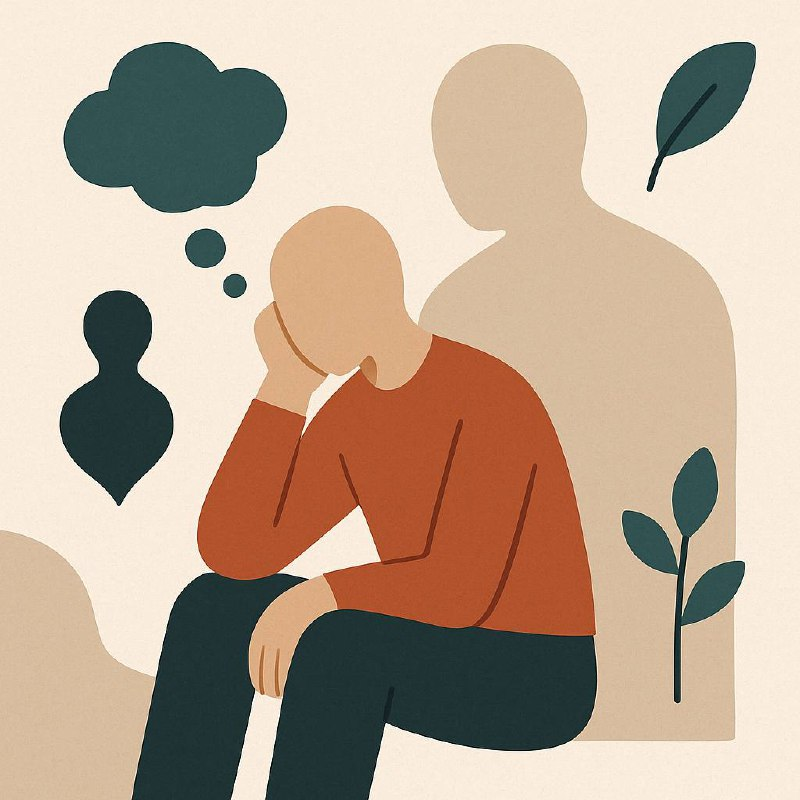

«Ўшанда бошқача қилганимда эди…»

Эҳтимол, сизга ҳам таниш бу гаплар:
«Агар ўша ишни қилмаганимда…»,
«Ўша гапга рози бўлганимда…»,
«Бошқа йўлни танлаганимда…»
«Ўша вазиятда бошқача гапирганимда…»
Бу фикрлар илк бор шунчаки хотирадек келади. Лекин вақт ўтиши билан қалбни эза бошлайди. Ўзингизни айбдор ҳис қилишга мажбурлайди. Ўтмишни «тўғрилаш» хоҳиши бугунги тинчликни ўғирлайди.
Хатто бу фикрлар 10 дақиқа олдин бўлиб ўтшан ҳолатга нисбатан ҳам ички кечинмаларда юзага келади!
Бир сўз билан айтганда — бу ўйлар инсонни ўзига қарши қўяди.
Лекин аслида, сиз ҳозир қаерда бўлсангиз ҳам — айнан шу ҳолат, аниқ-ки, эришишингиз мумкин бўлган энг яхшисидир.
Чунки ҳар бир қарор, ҳар бир кечиккан имконият, ҳатто «хатолар» — барчаси сизга сабоқ бўлди. Сизни ҳозирги ақлингиз, тажрибангиз ва қарашларингизга олиб келди.
Албатта, бошқача қилишингиз ҳам мумкин эди.
Лекин сиз инсонсиз. Келажакни кўра олмайсиз. Лекин Яратган кўради.
Эҳтимол ўша «бошқача» сиз учун оғир оқибатларга олиб келар эди.
Инсон таъбир жоиз бўлганда яхшиликда ёмонлик ва ёмонликда яхшилик кўра олиш қобилиятига эга эмас.
Ҳар гал “Агар…” деб афсусга тушаётган бўлсангиз, бир сўзни эсдан чиқарманг:
Бу — тақдир.
Шайтон инсонни афсус билан надомат заифлаштиради. Унинг мақсади — сиздан ҳозирги бор неъматларингизга нисбатан шукрни унуттириш.
Сиз ўзингизни кечирмасангиз, бугунги ҳаётингизга аниқ қадам ташлай олмайсиз.
Шукр қилинг. Афсусни ташланг. Ҳақиқат билан яшанг.
Шунда бир кун келиб айтасиз:
«Шукрки, ўшанда барчаси айнан шундай бўлган. Акс ҳолда мен бугунги ҳолга ета олмасдим.»
Сиз ҳозирги жойда бекорга эмассиз.
Ҳозирги натижангиз — энг яхши сценарий, бўлиши мумкин бўлган энг зўр натижа.
Шукр қилсангиз — Аллоҳ янада зиёда қилади.
Агар афсус билан яшасангиз — бор неъматингизни ҳам сезмай яшаб ўтиб кетасиз. Ва афсуски бундай тоифа одамлар жамиятда кўпчиликни ташкил этади.